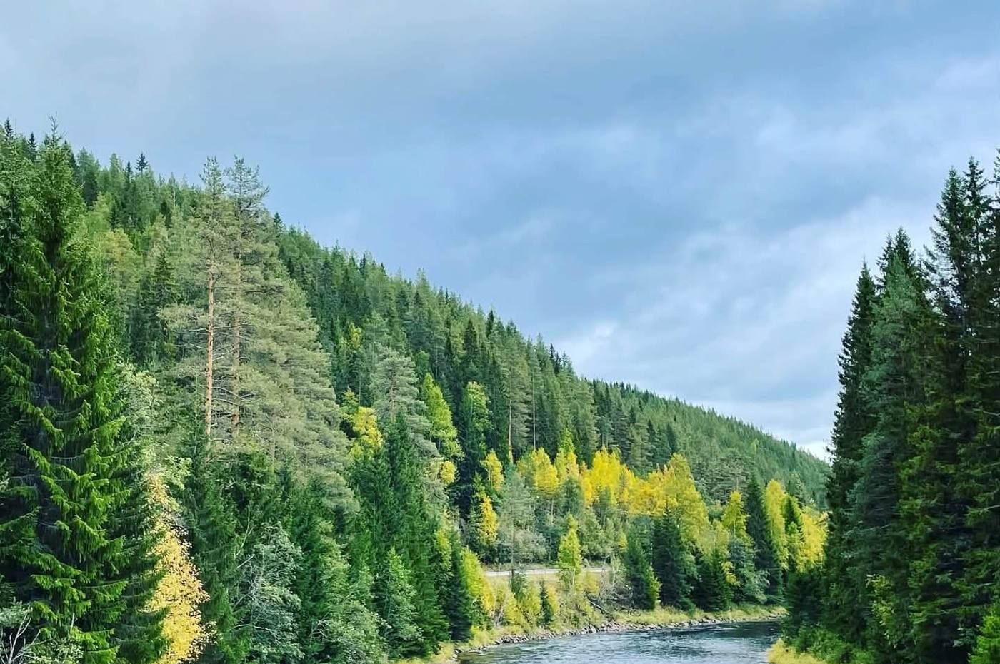

Året runt
Aktiviteter
I Älvdalen kan du vandra, fiska, åka längdskidor och skoter. Visit Dalarna samlar tips och information för varje aktivitet.
Sevärt
Platser och kultur
Hykjeberget
Utsiktsplats i Älvdalen, känd för sin utsikt.
Trängsletdammen
Sveriges högsta damm.
Porfyr- och Hagströmsmuseet
Här kan du se Hagströmsgitarrer och möta porfyrens hantverkstradition.
Älvdalska
Älvdalens egen dialekt har rötter i fornnordiskan.
Vad händer i Älvdalen?
Musik, kultur och andra evenemang för både besökare och Älvdalsbor samlas i Visit Dalarnas kalender för Älvdalen.
I kommunen
Fjällen och sjöarna
Idre, Särna-Fulufjället och Grövelsjön ligger i Älvdalens kommun. Läs mer om resmålen hos Visit Dalarna.
Saknas något?
Vet du något som borde finnas med här? Tipsa oss, så bygger vi ut sidan tillsammans.
Tipsa oss